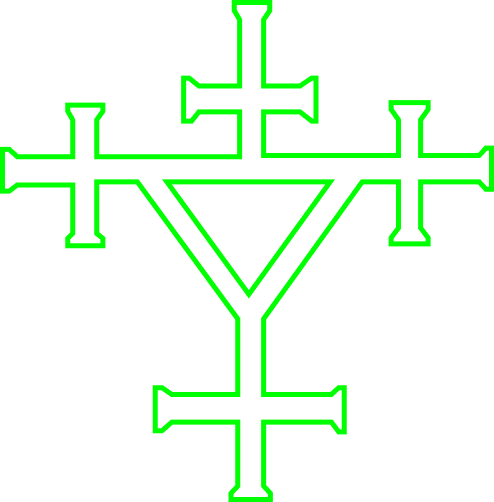
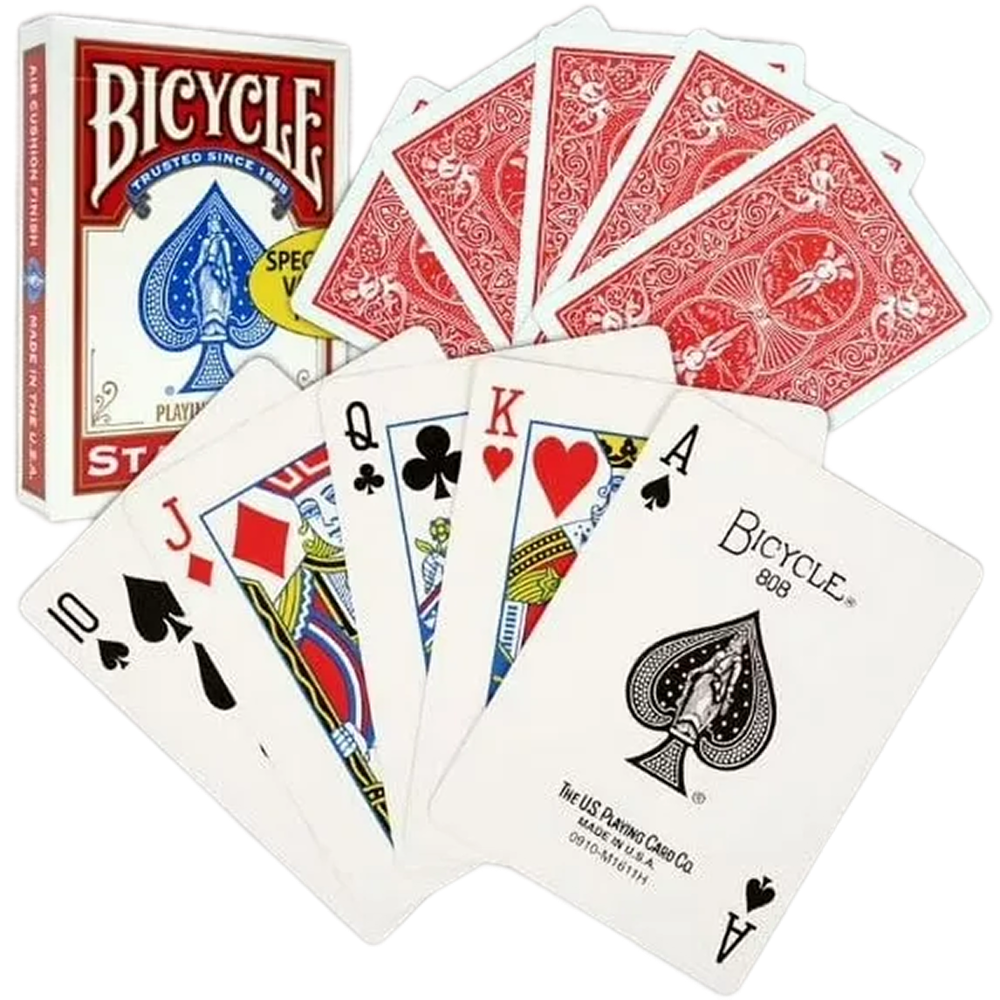
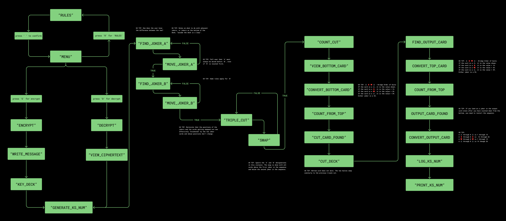
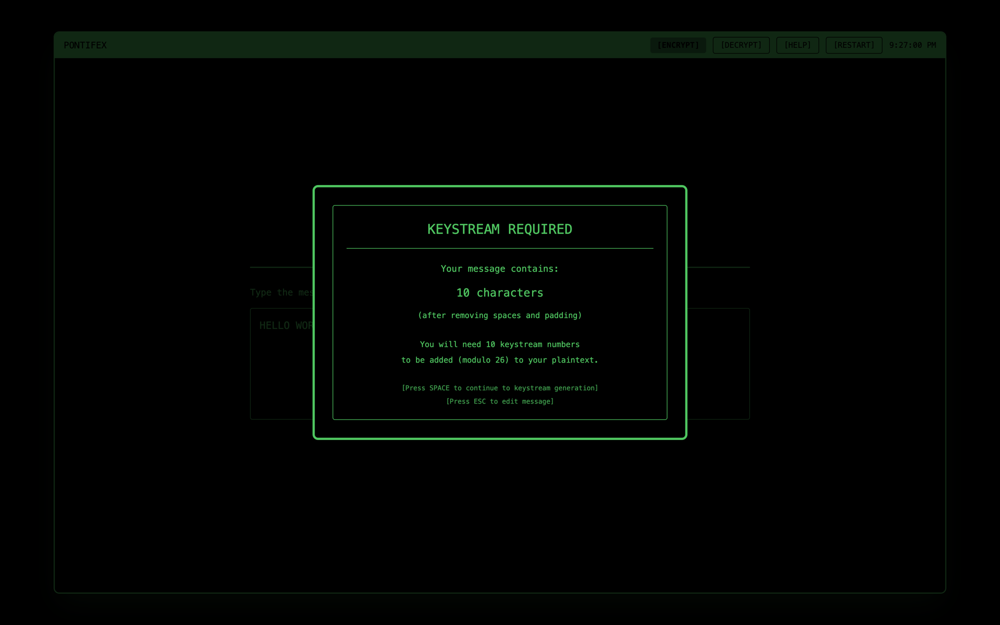
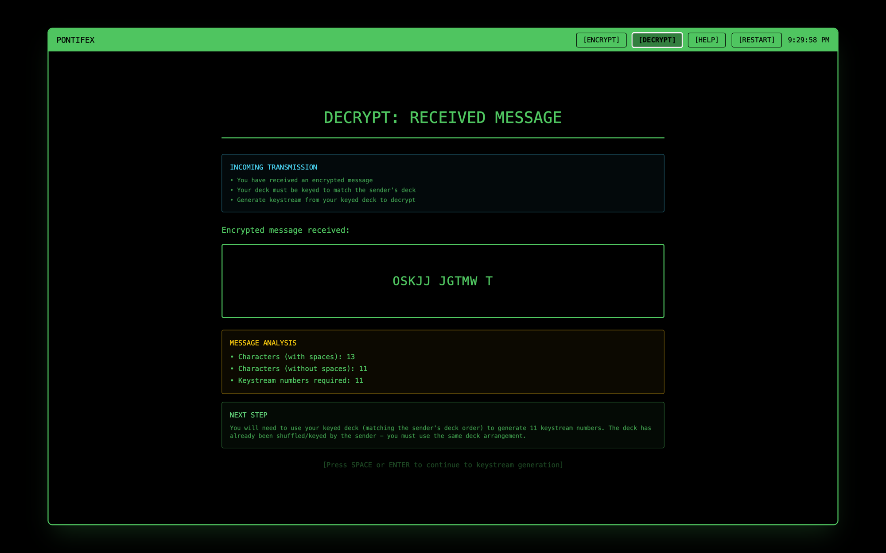
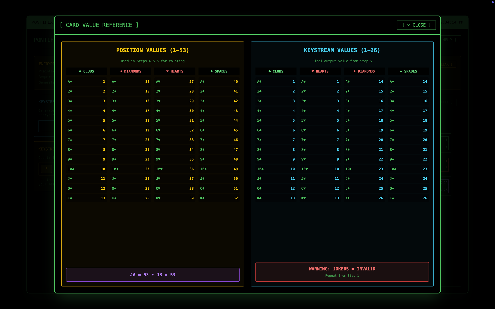

An interactive visualization of the Solitaire cipher — the pen-and-paper encryption algorithm from Neal Stephenson's Cryptonomicon, designed by Bruce Schneier.

The Story
In Cryptonomicon, Randy Waterhouse and Enoch Root need to communicate without being picked up by Van Eck phreaking — surveillance that reads electromagnetic emissions off a monitor. Their solution: a deck of cards and a pen-and-paper cipher called Pontifex.
Bruce Schneier designed the Solitaire algorithm specifically for the novel, and Stephenson published the full instructions in the appendix (pgs. 911–917). I'd always been curious about it but never sat down to actually work through it.
This project was the excuse.

Process
I started by transcribing the algorithm from Schneier's website and the novel, then got out a real deck of cards. The Solitaire I knew from Windows 95 wasn't the right mental model — the cipher operates differently and the joker mechanics took time to internalize.
Hours of working through it manually paid off. By the time I started vibe-coding with Figma Make, Claude, and ChatGPT, I could troubleshoot output mismatches because I understood what the correct result should look like at each step.
The keystream generator was the hardest part to map — so I drew it out as a state machine first.

Encrypt + Decrypt
In Encrypt mode, the user types a plaintext message. A modal tells them exactly how many keystream numbers they'll need to generate — one per character. Once enough keystream is generated, they advance to the Add Modulo 26 step to produce the ciphertext.
Decrypt mode inverts this. The user receives an already-encrypted message and a pre-keyed deck — simulating what Enoch Root would hand Randy Waterhouse. They generate keystream from that known deck state and subtract modulo 26 to recover the plaintext.


Try It
The full game is playable in the browser. Choose encrypt or decrypt, generate your keystream one step at a time, and see the algorithm work. Conversion tables are available in-game if you need them.

Reflection
The card deck and step-by-step flow clearly depict keystream generation. Walking the algorithm out one move at a time makes something genuinely opaque feel learnable.
Playing with a real deck before touching any code was the right call. It made troubleshooting accurate — I could spot wrong output because I knew what right looked like.
The mechanics are solid, but the connection to the novel — Randy, Enoch, the stakes — is mostly absent from the UI. More of the story could come through.
Some edge cases in the UI haven't been ironed out. A next version would polish these and explore what other vibe-coding tools produce compared to this stack.
The Stack
Next Case Study
Chunk: A Dada Manifesto →